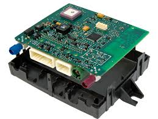

La CU
L'unità di controllo, abbreviata anche come CU (dall'inglese: Control Unit), è un componente della CPU che ha il compito di coordinare tutte le azioni necessarie per l'esecuzione di una istruzione e di insiemi di istruzioni.
Essa è uno dei tre blocchi funzionali principali in cui è suddivisa un'unità di elaborazione centrale (CPU). Gli altri due blocchi sono l'unità logica aritmetica e l'unità di registro. La sua funzione è quella di recuperare le istruzioni dalla memoria principale, decodificarle (interpretarle) ed eseguirle, utilizzando l'unità di elaborazione centrale.
La CU il componente che dà la possibilità al microprocessore di eseguire istruzioni diverse. Le azioni che coordinano i vari settori della CPU (la ALU, i registri, il Write-Back) vengono dette "micro operazioni", mentre un insieme di micro-istruzioni viene detto "microprogramma".
Esistono due tipi di unità di controllo: le unità di controllo cablate, generalmente utilizzate nelle macchine semplici, e le unità di controllo microprogrammate, utilizzate nelle macchine più complesse. Nel primo caso, i componenti
principali sono il circuito logico sequenziale, il circuito di controllo dello stato, il circuito logico combinatorio e il circuito di emissione del riconoscimento del segnale di controllo. Nel secondo caso, la microprogrammazione
dell'unità di controllo è memorizzata in una micro-memoria, alla quale si accede in modo sequenziale per eseguire successivamente ciascuna delle micro-istruzioni.
Le uscite della CU sono responsabili del controllo dell'attività del resto del dispositivo. Una CU può essere considerata come una macchina a stati finiti.
La CU è il circuito che controlla il flusso di dati attraverso il processore e coordina quest'ultimo, che a sua volta controlla il resto del computer.
Esempi di dispositivi che richiedono una CU sono le CPU e le GPU. La moderna era dell'informazione non sarebbe possibile senza la progettazione di complesse CU.
 Torna all'indice
Torna all'indice